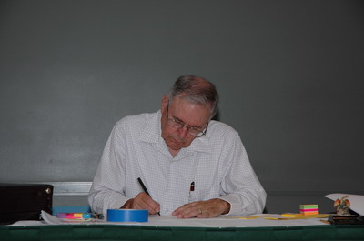
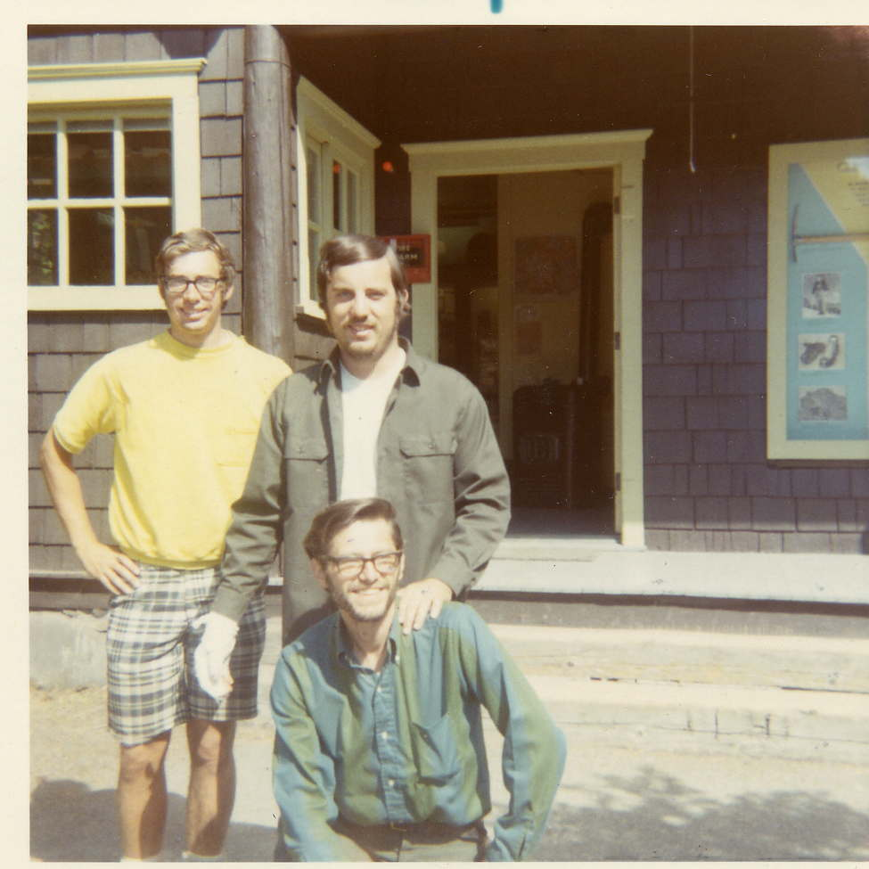

|

Doug Beyerlein:
Buz at work during DragonFlight 2007 Buz's real first name was Burrard. Burrard was a family name (although I don't remember the details), but he always went by Buz. I introduced Buz to Postal Diplomacy in 1966. He was a friend of Steve Hueston. Steve contacted me after a newspaper article was published in the Seattle Times about our Diplomacy group in Seattle. At that time Buz lived in Kent, Washington (just south of Seattle). Buz and Steve were regular players at our local weekly Diplomacy games in Seattle from 1967-1970. After the local games ended Steve, Buz, and I did a lot of hiking and backpacking in the Cascades, including backpacking the 90-mile Wonderland Trail around Mt. Rainier in nine days (Buz is the one kneeling in the photo, taken in 1970). Buz always used an old Trapper Nelson wood-frame backpack and wore his army boots from when he was in the U.S. Army.

After Buz graduated from high school he enrolled at the University of Washington (UW) in Seattle. He immediately fluked out and was drafted by the army (this was in 1959-60). After serving in the army Buz petitioned to re-enroll at the UW and was accepted. He then fluked out a second time.
After doing a variety of things he enrolled at a local community college and got straight As. Then after graduating with his associate degree from the community college he petitioned the UW a second time to re-enroll. This time he was turned down. One of the professors who reviewed his application told Buz that he would never get a degree at the UW. Buz proved him wrong. Buz appealed the university's decision and eventually won the right to re-enroll. This time he got straight As at the UW and both a bachelor's degree and a MBA degree. He finished his MBA work in or about 1973, about the same time I was getting my MSCE at the UW. Buz was obviously very smart – just not very focused in his teens and 20s. He later became a CPA and lived in Lynnwood, WA (north of Seattle) with his wife, Sharon, and their two children. After I moved from Seattle to California in 1973 I lost touch with Buz for a number of years. I last talked to him in 2005 when I was starting a new company and was looking for a CPA. He declined the offer, as he told me that he was getting ready to retire (he was 65 at that time). I know that he later ran for a Lynnwood City Council position, but lost. Before becoming a Diplomacy player, Buz was a competitive chess player and played in local chess tournaments. I don't know how good he was, but I know that he was better than me. ~ D.B. Nathan Barnes: Buz Eddy was not a man who undertook anything lightly. He brought his brand of relentless energy to the gaming world beginning with chess and ultimately Diplomacy. He was in it 110%. Buz did wonders for the Seattle hobby and was active in supporting the national organization as well. He invented awards, a popular player ranking system, and did his best to make the game Diplomacy as approachable and accessible as he knew how. There is no one in the Diplomacy hobby today that is giving anywhere near the time and resources that Buz once did. He hosted, he attended events, and worked really hard at building up the Seattle Diplomacy community. Because of Buz’s work, there was a place for me to play Diplomacy in Seattle. A place to play in a tournament where I met players from all over the country. There were Sunday games in Ballard in a ramshackle old house; tournaments in hotels, convention centers, and schools; and always more than enough prizes to go around. Without Buz I wouldn’t have traveled all across this country and ventured into Europe to play this crazy game with other scruffy weirdos, many of whom are now good friends. And for that I am very thankful. Buz and I did not always get along. We always tussled on the Diplomacy board because he always came straight at me, most famously when his Russia began pumping out northern fleets to steam around England and attack my France. Off the board we also tussled, as he often saw my work with the Portland Piggyback crowd to build a regional organization and later the tournament I ran at the Washington Athletic Club as a threat to his way of doing things. Despite our differences, we always kept in touch and tried to do what we could to support the hobby. When Buz’s health began to decline, Buz cut back on his work for the hobby and stopped running things. He would still show up to events, but for less and less time and with less and less of his former energy. While I have a lot of fun stories and amazing memories involving Buz, it’s not any single moment that I mourn. I mourn the loss of a man to cared deeply about the Diplomacy hobby and the game, despite the fact that for most of the years I knew him he was not a great player. Part of his issue was applying too much of his chess thinking to the game – rigidly relying on the “optimal” approach to each country. The result was that he was almost always wiped off the board, and yet he came back and played again, and worked hard to give others the opportunity to play. It is that commitment and selflessness that I will always remember and respect about Buz Eddy. Rest in Peace, Buz. We never said it enough when you were with us: Thank you! Your work for this hobby touched a lot of people, it meant something to us, and we will never forget it. ~ N.B. Eric Mead: Buz was the reason I got into organized Diplomacy in the first place. I used to try to browbeat my friends into playing it with me, but I was a rank amateur when it came to both the strategy of the game AND my browbeating skills, compared to the great Buz Eddy. That man could have forced the Pope to give up part of His Sunday just to fill out a board! His dedication and hard work in the hobby always pointed to one thing: inclusiveness. He made everybody feel welcome, and like they belonged there. He made me feel that way, and it's the reason I kept going back to his games and his tournaments. Some of us who played regularly with Buz used to joke a bit at his expense about how he made sure we all left with a certificate, or a trophy, or some kind of recognition. We thought it was funny that you would have to go up to the front of the room and collect your 22nd place trophies, and we teased Buz about it. What I finally came to understand was that it wasn't about the competition for Buz. You see, along with your certificate, you would pick out a prize. And mixed in with all the other prizes you could pick from, there were always Diplomacy boards. Buz would, with his own time and at his own expense, scour thrift shops, antique stores, eBay, and every other source you can imagine, to buy old used Diplomacy boards, so that he could be sure that everyone who played in his games owned a copy of it. He wanted to make sure you owned a set, so you could pass on the game to your friends, the same way he had passed it on to so many of us. ~ E.M. Eric Ozag: Cathy and I are sorry to learn that Buz lost his long fight with Alzheimer's. I will pass along to others I know who also knew Buz from our Deadwoodcons. Buz deserves a lot of credit for introducing countless people in the Seattle area to the Diplomacy game; he practically single-handedly brought a whole new generation of players into the Hobby through the annual Diplomacy tournaments at Dragonflight, and also the Metro Seattle Gamers group, which I sometimes attended on occasion. Cathy and I always enjoyed Buz making the trek to attend our Deadwoodcons at our house in the woods at Verlot, and Granite Falls in later years, where he introduced us to several other types of board games. One thing you could always count on about Buz in a face-to-face Diplomacy game was his predictability, to a fault. He stubbornly played "by the book" (Buz probably memorized Walker's Gamers Guide to Diplomacy) and was so set in his ways in that Country A must ally with Country B; anything other combination did not compute. This drove me nuts as I tend to "wing it" and make it up as I go, so this made it difficult to form an alliance with Buz (not that I didn't want to- he didn't want to as my style probably drove Buz nuts). Incidentally, Buz and Terry Tallman were polar opposites around the Diplomacy board, Terry had anounced in a couple Dip games at our house "I have one goal: Kill Buz!" (maybe Terry and Buz are duking it out or giving each other a big hug!) in Heaven. Rest in Peace, Buz. ~ E.O. Kevin Kacmarynski: I thought I'd share my favorite memory about Buz - it's a bit of a tale, so bear with me. This was at the DragonFlight Diplomacy tournament, probably 12-13 years ago - I don't remember the exact year. Buz did like his prize table for the tournament where everyone got to pick a prize off the table in order of their final ranking in the event. It was a little corny and it was actually kind of cool in a Buz-way. Anyway, Matt and I had walked down to Starbucks and I decided to pick up a caffé mocha to put on the prize table. I figured someone would probably take it eventually, cause it had to be a better prize than most of the eclectic collection of items that typically resided on the table. We got back to the event shortly before awards started and I put the drink container on the prize table with the rest of the items. Finally Buz starts reading off the names of the finishers in order and people start coming up to take their prizes. I don't remember how many players there were, but everyone who played got to take a prize, so it could be 30-40 people or more who would be eligible. The mocha wasn't picked in the first half of the prize selections, which probably wasn't that surprising. There was a vendor booth for some type of card game (I had never heard of it) in one of the booths right next to the Diplomacy event. It was manned by a young couple dressed mostly in black leather. Given their proximity to the Dip games, they were watching the prize ceremony - probably for lack of anything better to do at the moment. Eventually, the young lady half of the couple walked over to the mocha with a marker and wrote on the side of the cup "comes with one kiss" - or something to that effect - and put it back on the table. The prize had suddenly gotten better and though person after person came up to the prize table after that, still no one took the mocha. Buz finally called the last name on his list and the last guy wandered up to the table looking at the handful of things that were left. Someone started a "mocha" chant and soon everybody at the prize proceedings was chanting for this fellow to take the mocha and the kiss that came with it. Looking somewhat flustered, he disdained the mocha and picked something else off the table. This is where Buz came in and said (quote approximate) "as the tournament organizer, I get the last prize" and he picked up the mocha. Everyone cheered and the young lady came over, called him a "dirty old man" (or something to that effect), and gave him a quick peck on the cheek. We all thought it was both hilarious and fantastic. So thanks, Buz - we're gonna miss you. I haven't played Diplomacy in probably 10 years and I still remember the advice that he provided so long ago about playing Russia. He told me that the best way to keep England out of St. Petersburg is to attack them first. Of course, he was Russia and I was England when he told me this and he had already convinced Germany to attack me. Thanks Buz. ~ K.K. Matthew Shields: I met Buz in the summer of 1999. I was 26 and had just moved back to Oregon and didn’t yet know much about the Diplomacy world. I was the typical kid who’d played in college, mostly online at the dawn of the internet. Early enough to know about the previous generation of players but not soon enough to have experienced their world. Somehow I heard about Dragonflight. I’d never been to a Diplomacy Tournament, but I was intrigued so I hopped on the train and headed to Seattle for the weekend. I didn’t know who I’d meet or what I was getting in to. What I found was an eclectic collection of characters all following their own paths, but all held together by Buz Eddy. There was a common history among the old Seattle hobby that I was never a really a part of, but I’m glad that I arrived in time to meet some of the guys that were. Some of the names you’d know and some you wouldn’t. Some are still with us and some are gone. But what Buz brought to The Game was more than just another player showing up at another tournament. Buz wanted to build something. Something that would endure. And he never tired of trying to find a new way to do it. Something that would make games more compelling. Something that would make events more interesting. Some of his ideas were bizarre and some were downright infuriating. Some were embraced and some were mocked, but the common thread at the heart of it all was a simple desire to keep the kids (and we were all kids then) coming back for more. And they did. Buz’ events were never the largest and perhaps never the greatest. But they pulled together players from divergent parts of the hobby whose paths wouldn’t otherwise have crossed. His events created connections and friendships and rivalries that spawned a decade of organized play throughout the northwest. Events that he had no direct hand in, existed only because of his guidance and his example. Without Buz there was no DipCon in Portland. No World DipCon in Vancouver. No decade at the WAC. Because the rest of us simply took what he had built and built upon it. He was the foundation, and in the years that he’s been gone the structure has been weaker. He and I didn’t always agree, and we sometimes worked at cross purposes. But I was always glad for his dedication to our hobby, and thankful for his willingness to do the work that often no one else wanted to do. He was my friend, and I was privileged to follow his example. I have friends around the world today that I would not know but for Buz Eddy. Cities I’d have never visited and people I’d have never known. And yet it is here in the Northwest in this place that is my home where his absence is felt the strongest. He wanted to build something. In the end what he built was a community. And we are poorer for his passing. ~ M.S Larry Peery: I was saddened, but not surprised to read Nathan Barnes comments about the recent passing of Buz Eddy. It’s now getting to the point where I’m surprised not to read of another Old Fart’s passing as the seasons and issues of Diplomacy World and The Diplomatic Pouch go by. It is getting to the point where Diplomates are no longer an endangered breed, but a nearly extinct species. Still, each passing gives us cause to pause, remember and reflect on another Diplomate who will no longer be with us except in our memories. Buz was one of the hobby’s true treasures, a real curmudgeon, our very own Andy Rooney. If he hadn’t already existed we would have had to invent him. He was one of those rare hobbyists who was not only willing to ask for help when he needed it, but also able to offer it without being asked. I affectionately remember that no matter how hair-brained some of my ideas in the 70s and 80s were, he was always there with a word of encouragement or a subtle way of bringing me down to earth. My favorite Buzism was simple. I once asked him to help me on a project (I didn’t even remember what it was.) and he responded, “Ah, Larry, I did that ten years ago, and Conrad did it twenty years ago. Maybe it’s time for a new idea?” Even in a hobby filled with black sheep, Buz Eddy always stood out because he not only did his own thing his way, he did it with gusto. I’ll miss that. ~ L.P. David Norman: I met Buz on several of my trips to North America to play Diplomacy, from my first US Tournament back in 1998, to the last time I saw him in 2007. But my overriding memory of Buz comes from the last two of those trips. The first, in 2006, started with my first ever FtF solo, and second place at Canuck Con in Vancouver, before travelling down to play at Dragonflight the following weekend. Buz was tournament director as ever. Buz always believed that the game should be played exactly as per the rulebook, which meant that my 15 centre England in the first round counted for very little - it was a four-way draw, which scored the same whether you had 15 centres or 1. Fortunately I soloed the second round - so Buz awarded me my only ever tournament winner's trophy. The following year, I saw Buz at HuskyCon. He asked me what happened to my game in 2002. I didn't understand the question... Buz was the keeper of the records for the North American hobby. He explained that according to his stats, up to 2002, my ranking had been fairly consistent. Then in the period from then on, it suddenly shot up, culminating in the above two results. I was completely unaware of it, but it coincided with the point at which I got involved in the Diplomacy AI project - and so was playing hundreds of test games against AI players on the computer! That was so Buz. He didn't just keep the records, he studied them. Rest in Peace, Buz. ~ D.N. Manus Hand: I had heard of Buz Eddy long before I met him, and had corresponded with him often when The Pouch was getting up and running. All I knew of him was that he was the leader of the NADF, and if you wanted to know anything about the FTF hobby, especially in the US and Canada, he was the one to go to. I first met him when I traveled to compete in his tournament in Seattle, and it was only then that I realized what a special man he was and how lucky our hobby was to have him diligently running things. During that trip, I received my NADF All-Star jacket, and Buz was the one to award it and first put it over my shoulders. When I had heard I would be made an All-Star I had no idea that it would come with anything but bragging rights (and a target on my back), so to find that Buz had spent his own money (and not an insignificant amount) to provide me and the other All-Stars with an extremely nice, personalized jacket, which I wear to this day, was when I realized that Buz was much more than statistics and book-keeping (but boy, he was that) for us — he was a donor, a leader, someone who gave of himself, both in time and money, and above all, a great friend. He will be sorely missed, but hopefully he is looking down on us all now, stabbing each other in the back and trying to live up to the legacy he left for us and our hobby organization. ~ M.H.
If you wish to e-mail feedback on this article to the author, and clicking on the envelope above does not work for you, feel free to use the "Dear DP..." mail interface. |